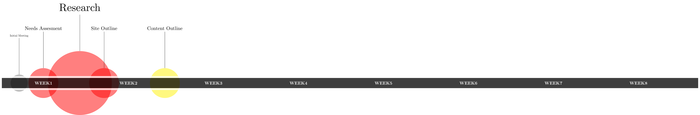

\documentclass{standalone}
\usepackage{datatool}
\usepackage{tikz}
\usetikzlibrary{shadows}
\usetikzlibrary{positioning}
%\usetikzlibrary{calc,intersections}
\usepackage{filecontents}
\begin{filecontents*}{tasks.dat}
phase,taskid,name,position,size
initial,initialmeeting,Initial Meeting,-2,4
planning,needsassesment,Needs Assesment,0,7
planning,research,Research,3,15
planning,siteoutline,Site Outline,5,7
content,contentoutline,Content Outline,10,7
\end{filecontents*}
\DTLloaddb[noheader=false]{tasks}{tasks.dat}
\begin{document}
\begin{tikzpicture}[week/.style={font=\bfseries, text=white},
initial/.style={fill=black!60,circle,opacity=0.5},
planning/.style={fill=red,circle,opacity=0.5},
content/.style={fill=yellow,circle,opacity=0.5} ]
%%%%% Tasks
\DTLforeach*{tasks}{\phase=phase, \taskid=taskid, \name=name, \position=position,\size=size}{\node(\taskid)[\phase, minimum size=\size em] at (\position, 0) {};
\draw (node cs:name=\taskid, anchor=north) to ++(0,3) node[above, scale=\size/6] {\name};
}
\filldraw[fill=black, draw=white,line width=1ex,opacity=0.75] (-3.5,-0.5) rectangle (54,0.5);
%%%%% Weeks.
\node[week] at (0,0) {WEEK1};
\node[week] at (7,0) {WEEK2};
\node[week] at (14,0) {WEEK3};
\node[week] at (21,0) {WEEK4};
\node[week] at (28,0) {WEEK5};
\node[week] at (35,0) {WEEK6};
\node[week] at (42,0) {WEEK7};
\node[week] at (49,0) {WEEK8};
\end{tikzpicture}
\end{document}